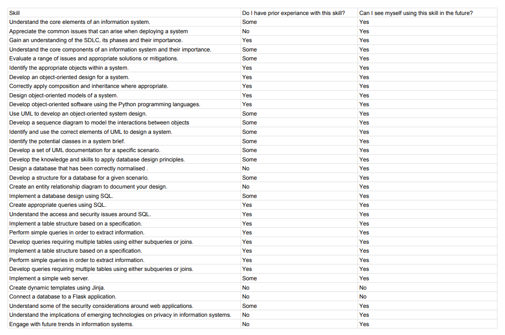

Personal Development
Reflecting on my personal development throughout this course
Personal Development
I created this skills matrix to assess how the content of this module fits into my current understanding and what skills/ topics were new.
I found I already level of understanding of many of the subjects but here I really developed this mutch deeper. I think that skills such as database normalization will be really useful, previously I had done this 'intuitively but having a documented technique is amazing. I think that knowing about database normalization will make it easier to discuss database designs with colleagues in the future. Similarly, I have done UML style diagrams before to convey ideas, but now knowing proper UML will help my work to be much more accessible to others and incorporate much more detail.
I have come across 'NoSQL' previously but it was not until spending time during this module that I really came to appreciate what it is exactly and why it's important. I now see NoSQL technologies as not simply better than SQL but as viable alternatives to consider when selecting technologies based on project requirements.
Strengths: I think that the programming tasks went well in this module. I find it very easy to get engrossed in programming work.
Weaknesses: I find starting work that is new to me is often the hardest part. I find it easy to carry on doing something that is underway, but harder to start something new. I have been trying different approaches to getting 'my foot in the door' and have found that simply getting anything done regardless of quality is can help to crack into the project. Another thing I have tried is imagining what would a 'normal example' of tasks result might look like. I found visualizing this helps me tap into ideas I already have but didn't realize.
Future Actions: I would like to try using a graph database in a personal project to get a better understanding of the options the technology provides. I think in the future even on small projects it would be good to keep in mind the software development life cycle as this could help with personal timescales and planning.